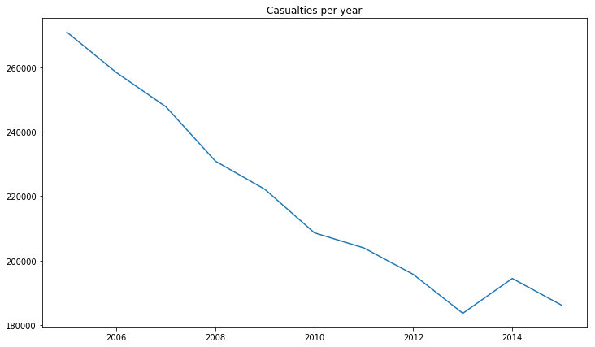
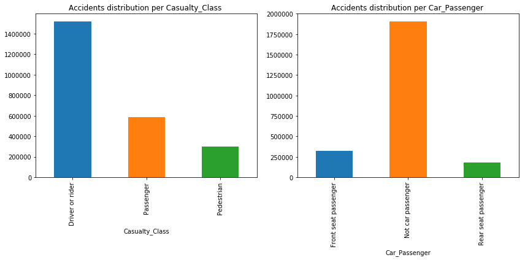
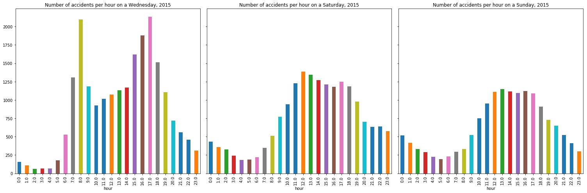
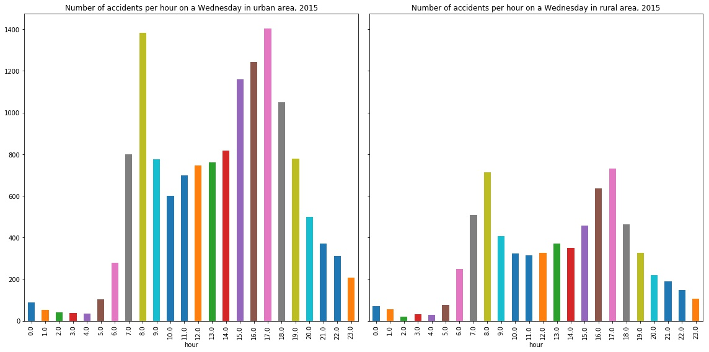
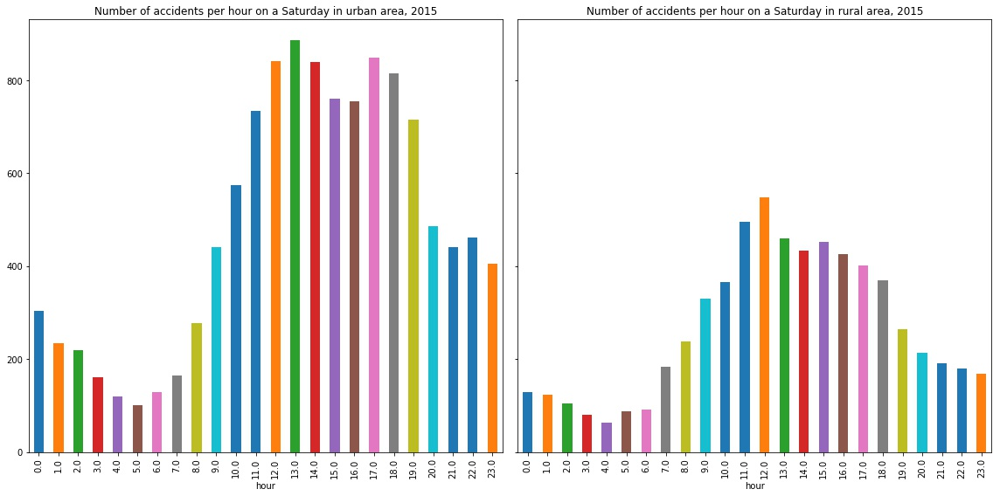
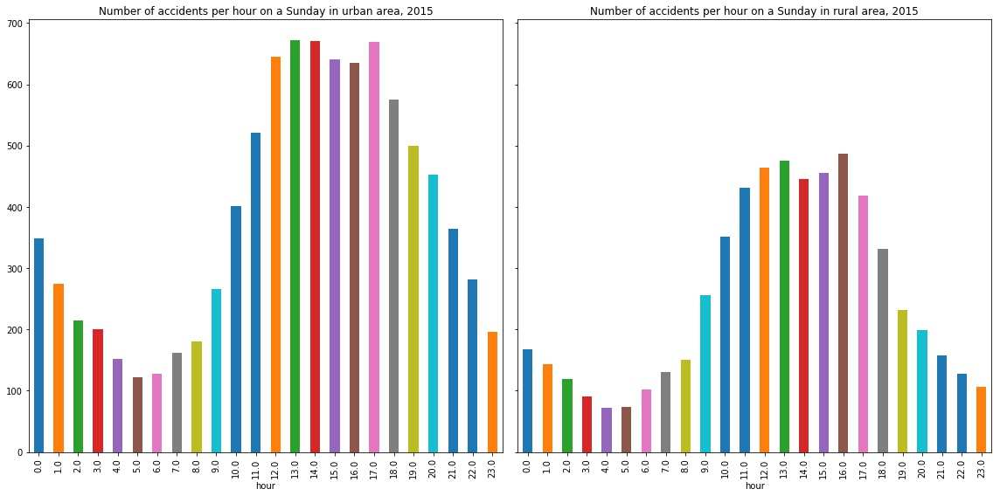
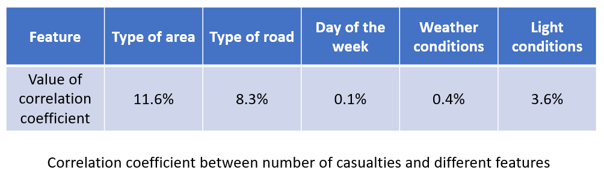
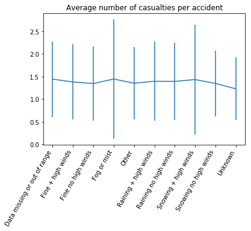
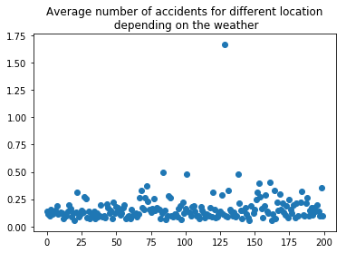
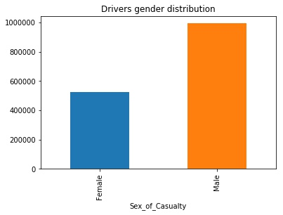

Why road safety?
Road traffic safety is a major societal issue costing up to 4% of a country's GNP, while
traffic crashes are said to become the fifth leading cause of death by 2030. The 2017
European Commission Fact sheet shows how the United Kingdom is a leader in road safety with 27
fatalities per millions of habitants while France stands slightly above average with 57. What’s
more, the United Kingdom provides their traffic reports from 2005 to 2015.. While it is well known
that the majority of road accidents happens while commuting, can the figures prove it ? Therefore,
our goal is to extract information from the UK dataset to put common road safety beliefs into
perspectives whether it is about driving conditions or the likelihood of being a casualty.
If you wish to know more about the technical details of our work, check our Github repo here.
Our approach
Once you dive in this dataset, you soon realize that there are a lot of interesting leads: specific
places and accidents, hypotheses on drivers or vehicles to check … Yet, time is the limit.
Therefore, after getting familiar with the datasets and the road safety situation in the United
Kingdom, we decided to focus on studying the correlation between our features and the number of
casualties. In doing so, we encountered several interesting outliers that we decided to investigate
to get to the bottom of the story. Finally, we provide some indications to justify well-known car
insurance bonuses.
Road safety in the UK: facts and figures from 2005 to 2015
Looking at the repartition of the casualties on a sample
In order to visualize the repartition of road accidents in the UK, we plot a sample
of the accidents on a map. We were looking for specific trends or localization that would appear as
more accident-prone than others.
Most accidents seem to be located within cities or their urban areas, especially
around London. There are also many accidents on the roads between major cities, for instance the
area between Manchester, Liverpool and Preston in the North of England. Consequently, a deeper
analysis of the distribution of accidents in rural or urban areas was necessary. Actually, according
to our data 40% of the accidents still happen in rural areas. Moreover, this value has not changed
significantly for the last 10 years: this trend is constant over time.
Speaking of time and evolution, let’s have a glance at the number of
casualties from
2014 to 2016:

As expected, we can see that the number of casualties has decreased linearly over
the
years except for a little bump in 2014. What is even more interesting is when we compare this
evolution,
to the evolution of the traffic itself which increased by more than 5% over the same period
of
time. This shows that this significant decrease over the years is not due to lower traffic but to
the
policies and the technical upgrades made to the vehicles !
One last thing that we thought interesting to look at from a global
viewpoint was the repartition of the casualties on the entire period from 2004 to 2016 :

The first observation that we can make is that passengers make for around 25% of the
casualties of the accidents, with most of them being car passengers rather than coach ones.
Moreover, pedestrians represent more than 10% of the casualties, which seems to be a very
significant part as they can only be impacted in specific circumstances in urban areas. Finally, we
see that casualties still mainly concerns drivers and rivers, that means people who are active when
on the road and who could have possibly taken steps to avoid the accident. This could be explicated
by two main facts: the high proportion of people taking their car alone, to commute for instance and
the increasing part of bike riders having road accidents. Despite this context, the government has
still taken no action to make wearing helmets compulsory for bike users.
The danger of rush hours:
Who has never been stuck in traffic? One could imagine that a reduced pace rhymes with
less accidents? Or on the opposite, more cars on the road entails more accidents? We used our data
to demonstrate the second proposition. While the trend looks alike for week days there is a huge
difference with week-ends.

Rush hours are blatant at 8am and around 5pm, plus it is interesting to notice that
the peak lasts longer in the afternoon: are people tired and thus less alert ? While on week-ends,
people seem to be moving around lunch and tea time (do not forget we are talking about UK!).
In order to understand whether accidents related to commuting are due to traffic jams or just to the
increase of drivers on the road, we compared rush hour in urban and rural areas during week days and
week-ends.



As one can see, rush hours are still seeable in rural areas even though they are less
pronounced than for urban areas. What is interesting is that the difference between rural and urban
areas decrease on Sunday: are people going to the countryside on Sunday ?
On the whole, reducing the number of vehicles involved in rush hours could led to a significant
decrease of the number of accidents: commuting at odd hours (10am - 8pm for instance) is safer than
commuting “like everyone else”.
Casualties likelihood
Before going deeper on some specific aspects of road accidents, we wanted to know which
specifications of an accident had the most impact on the number of casualties.

Once the number of vehicles involved set aside, the two most significant features are the type of
the area (i.e. whether it is urban or rural) and the type of the road. The correlation between
the number of casualties and these features was far above its correlation with the light conditions
nor the weather which is almost negligible unlike what people usually think ! This made us want to
have a more precise look at it.
œ
On the impact of weather
The common knowledge says that driving when the weather is poor is more dangerous.
Therefore, we tried to try to spot a difference in the number of accidents when the weather is poor
or not.
The problem is we do not know how often the weather is bad and therefore we do not have any proper
normalization.
For that reason we plot the average number of casualties per accident given many different weather
condition:

But that plot show that there isn’t much difference between different weathers.
The second step was to find the most dangerous locations in the UK and to compute the
frequencies of accidents when the weather is bad at these dangerous locations:

The plot show that there is mostly no difference across these different locations, telling us that
they are
not
more dangerous when the weather is bad. However there is a clear outlier that merits further work.
It corresponds to the location (51.498, -0.497) which we checked on Google Maps:
And the funny thing is that we discovered that this location was indeed particularly dangerous and
that
during bad weather it could be particularly difficult for a car on the right lane to be able to
enter
the road… So, act up UK!
On the justification of insurance criteria
Every driver has to be covered by a car insurance of which fares are a very sensitive topics,
depending on age, experience and even gender. Bonuses are supposed to depend on established facts
enabling the computation of the likelihood of having a car accident. For instance, some insurances
offer bonuses for female driver: to what extent can our data support this advantage ?
From 2005 to 2015, data shows that female drivers almost have half as much car accident than male
drivers, justifying a bonuses for car insurance companies. Yet, we can not conclude that it is safer
to drive for women, because the difference in the number of accident could be explained by a
difference in the number of driver: are men driving twice as much as women ?

Is there any other features which could be taken into account to propose bonuses to client ? We
investigated the other features provided in the dataset and came to the following conclusions:
- The well-known maluses for young drivers, for instance drivers under 25 in the United States, is
not
justified by our dataset: young drivers even belong to one of the less accident-prone
categories.
However insurance companies own data about the proportion of young adult driving and can,
therefore,
draw a more relevant conclusion. Once again, we lack data to properly normalize our
dataset.
- The same approach can be used for elderly which are even less accident-prone than young
drivers.
- The peak between 26 and 45 years old could be explained by intense working activity inducing a
fair
amount
and commuting, hence more risks of ending in a car accident.
-
Similarly, there is a burst in the number of accident for urban-originated driver which could
be
taken into account by insurances: depending on where you learn to drive and where you
predominantly
drive.
In a nutshell, this data is highly valuable for insurance companies because it helps
computing the likelihood of car accident for a driver depending on several characteristics. Combined
with the frequency of insured drivers it can build a relevant overview of at-risk-drivers.
One also has to notice that combining such data can be quite intrusive for insured persons
and goes against the concept of sympathy behind insurance.
Conclusion
NANFANFegzoijgzlkv lkglkzer